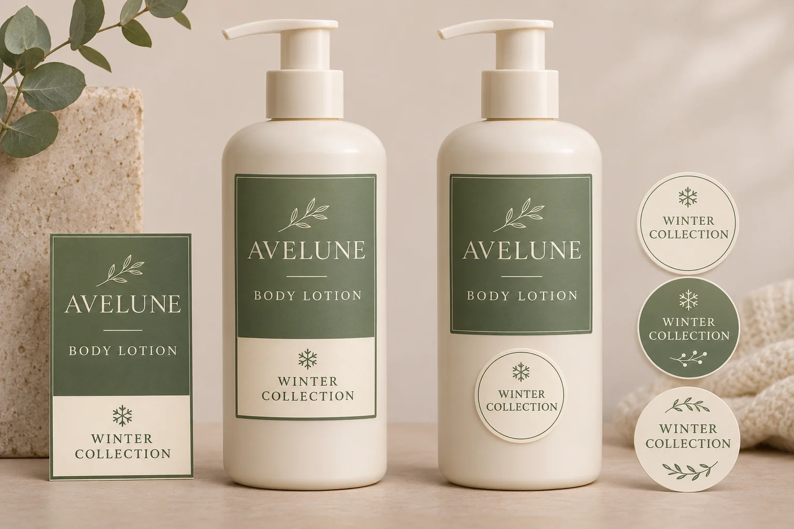
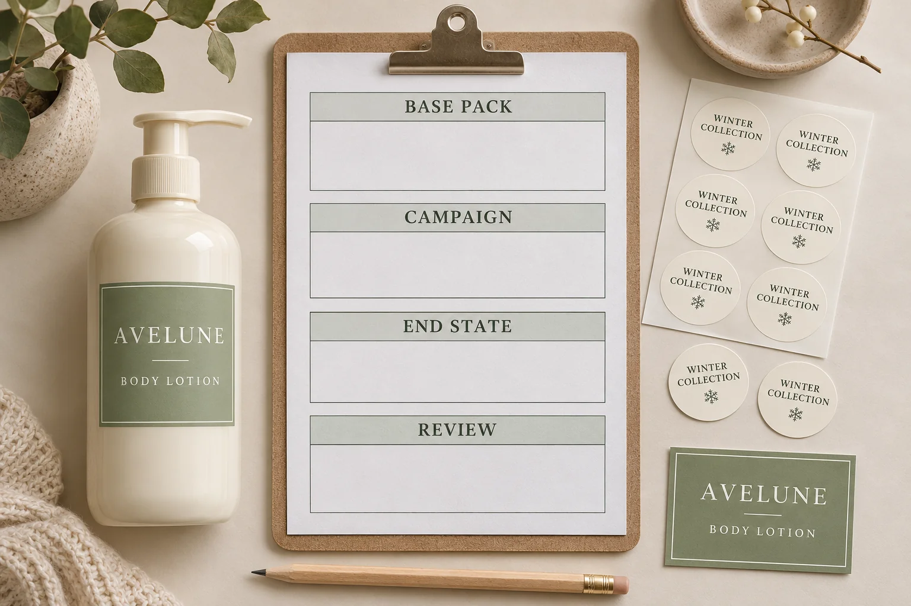

Print the seasonal treatment into a complete cosmetic label when the whole pack is intended to remain a distinct edition and the committed stock suits that plan. Consider a separate campaign label when the regular product and approved base pack can stay unchanged, there is a suitable placement area, and the additional application and end-of-campaign handling can be supported. Choose the pack arrangement before comparing the price of the extra sticker.
The purchasing question is which decoration becomes campaign-specific: the complete product label or a separately identified component. A short campaign does not make the underlying product short-lived. Equally, separating the message does not automatically make the finished pack reusable after the campaign.

Identify what changes for the campaign
Start with the product and market version, then mark the temporary message, visual treatment and intended selling window. Is the formula or product identity changing, or is an otherwise unchanged lotion receiving a seasonal presentation? Have the responsible brand reviewer identify which copy and graphics must remain part of the normal product label.
HAJOK's Nivea limited-edition project page describes seasonal cosmetic packaging as part of its own design work. It illustrates a complete-edition approach; it does not establish a particular label construction, measured sales result or a YT project. Separately, EAN Label describes campaign-message labels that can leave the main packaging design unchanged. That provider's specific pop-up construction is not assumed to be available from YT. The useful comparison is the scope of the changed component.
For a complete seasonal label, record which finished designs become campaign-specific and whether the edition may be supplied after the campaign window. For a separate component, identify the stable base design and the exact badge or sticker version. Neither arrangement authorizes different product wording or promotional claims. Obtain those decisions from the responsible brand owner before commissioning print.
Review the assembled pack, including its later state
Mark the intended component position on the actual container. A badge needs its own usable area and application review. Keep the product information and codes that the brand reviewer requires visible outside its footprint. Include the closure, curved areas and the way the pack will be held. A rendering with a conveniently empty front panel may not represent the actual production pack.
Decide whether the campaign component stays on the product, is removed through an approved process, or applies only to an outer pack. State who would carry out any later work and when. If removal is part of the plan, obtain a proposed construction and relevant evidence for the actual surface and use period. The removal-job comparison addresses that material decision. This guide does not promise that a promotional sticker peels away cleanly.
If the new component covers existing print, it also introduces a concealment and contact-surface question. Use the blockout overlay guide for that review. An independent badge in a genuinely available area may avoid covering old wording, but still needs its own application and appearance acceptance.
Use a campaign-component brief
Complete the following editorial record before asking for the two proposals. It produces a choice about the assembled pack and the work included, rather than a general preference for limited editions.
| Decision field | Input to obtain | What must be settled |
|---|---|---|
| Stable base | Product/market version, base artwork and container reference. | Can the approved regular pack actually remain unchanged? |
| Campaign component | Temporary artwork, complete-label or separate-component proposal, placement. | Which printed items become campaign-specific, and where are they applied? |
| Operating work | Application owner, quantities, sample review and any later handling. | Who accepts the added work and identifies the correct assembled pack? |
| End state | Campaign stopping condition, stock locations and authorized later use or hold. | What happens to remaining labels, unapplied badges and already decorated products? |
First confirm the stable product and copy. Next define the changed component and review the assembled sample. Obtain the application owner's response, then record the permitted end state with the brand owner. Compare quotations only after those fields describe a workable route. Hold a choice that relies on unconfirmed removal, obscured required copy or an unnamed party doing the extra work.

Compare complete proposals for the same usable packs
For the integrated route, request the complete seasonal designs, quantities by design, samples, supplied format and delivery scope. Identify what happens to any remaining edition-specific labels. For the separate route, include the normal labels, campaign components, additional application or inspection and any proposed later handling. A small badge price does not represent the whole assembled-pack cost.
In a hypothetical winter range with a deliberately distinct product presentation and no planned return to the regular pack, an integrated seasonal label can be a sensible proposal. It still needs accepted artwork, quantities and sample evidence. In a hypothetical unchanged lotion with a brief that permits a separately applied message, a second component may preserve the standard label artwork if placement and operating work are supported.
A separate component can leave unused base labels available for another authorized job; it cannot make already decorated products automatically suitable for another campaign. Record that difference. Use the stock-commitment guide for when material or finished stock is purchased, and the old-stock disposition guide when a version has actually been superseded. Those tasks follow the component choice made here.
Request the two campaign-label scopes
For cosmetic bottle and jar labels, send the regular and campaign artwork, container reference, intended placement, quantities and application operation. State the proposed end-of-campaign condition. Ask for complete-label and separate-component proposals where the project supports both. The form prepares a message; send artwork and pack photographs by email or WhatsApp.
Prepare a campaign label inquiry